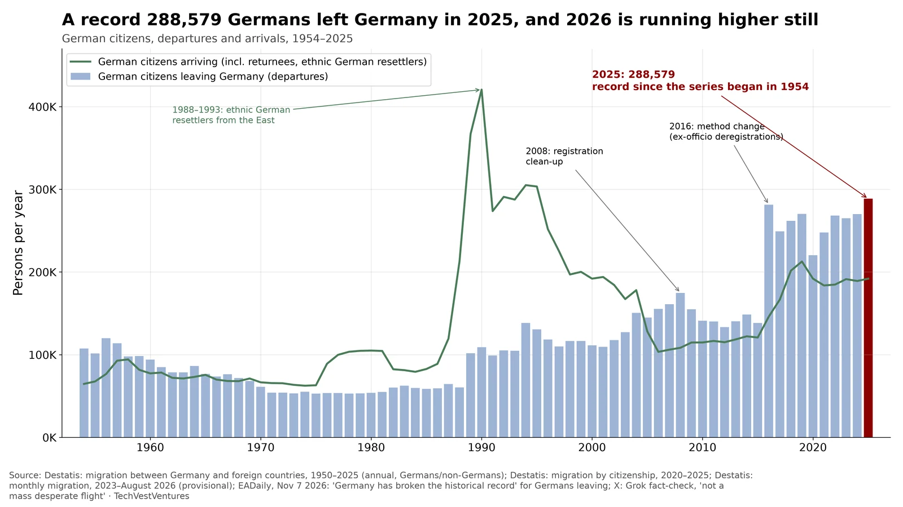

Q9. German Exodus

German citizens moving out of (red/blue bars) and into (green line) Germany each year, 1954–2025, from the Federal Statistical Office (Destatis). Departures of Germans reached 288,579 in 2025, the highest since the series began, above the 281,411 of 2016; with 191,890 arrivals, Germany lost a net 96,689 of its own citizens, the largest net loss since 2016 (135,364, a method-change year). Monthly provisional data show the outflow still rising: 204,928 Germans left in January–August 2026, +5.0% on the same months of 2025, and August 2026 (32,832) was the highest single month in the 2023–2026 monthly table.
- Germans leaving by year: 2021 247,829; 2022 268,167; 2023 265,035; 2024 269,986; 2025 288,579.
- Rolling 12 months to August 2026 on the monthly provisional basis: 304,873 departures (the monthly figures add to more than the final annual figure for 2025, so compare like with like: Jan–Aug 2026 vs Jan–Aug 2025 is +5.0%).
- Opposing view on X: a widely shared reply said Germans are 'fleeing desperately'; Grok's fact-check answered that net loss was about 97,000, top destinations were Switzerland, Austria and Spain, many moves are temporary for work or retirement, and Germany still had +235,000 net migration overall.
- The EADaily article frames this as a 'historical record'; the Destatis table supports the record, but it also shows breaks in 2008 and 2016 when registration rules changed, which inflate departures from those years on.
Note: Destatis counts registrations and deregistrations; some 'departures' are ex-officio deregistrations of people who left earlier or are no longer traceable, particularly after the 2016 method change. Footnoted years (2008–2010, 2016, 2019–2025) have methodological breaks. Annual data begin in 1954 for Germans. Monthly figures for 2026 are provisional.
Sources: Destatis: migration between Germany and foreign countries, 1950–2025 (annual, Germans/non-Germans) Destatis: migration by citizenship, 2020–2025 Destatis: monthly migration, 2023–August 2026 (provisional) EADaily, Nov 7 2026: 'Germany has broken the historical record' for Germans leaving X: Grok fact-check, 'not a mass desperate flight'